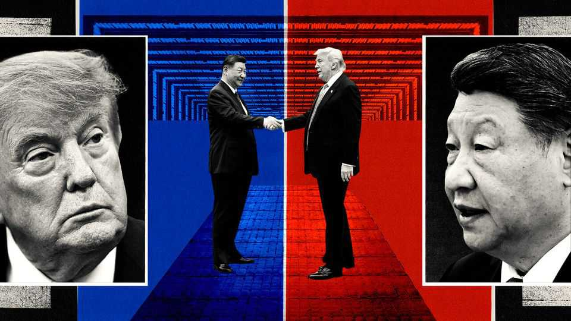
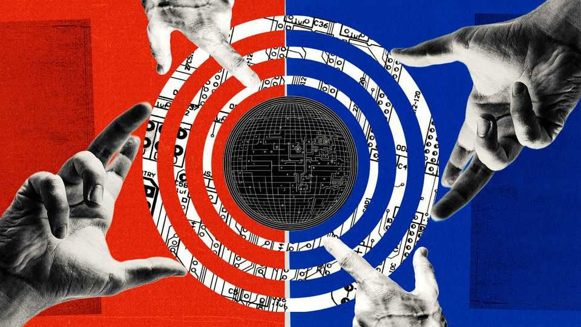

Real co-operation on AI is likely to elude China and America
Mutual suspicions run too deep

Sep 17th 2026
TO DANGLE A Nobel peace prize is a sure way to pique Donald Trump’s interest. So it was telling that Sam Altman, the chief executive of OpenAI, proposed a new pathway to it ahead of a visit this month to America by China’s president, Xi Jinping. If the two leaders could reach a deal on artificial intelligence, both should get the award, Mr Altman told Fortune magazine on September 12th. Echoing other American AI bosses after new warnings that superintelligent models could destroy mankind, Mr Altman argued that China and America should not risk losing control of the technology in their race to dominate it. “I don’t think this is hard,” he said. “This is like a one-page document.”
If only. America and China have not held official AI talks since 2024, when they declared that humans should retain control of nuclear weapons. Mr Trump and Mr Xi agreed in Beijing in May to restart the AI dialogue, raising hopes for a new consensus on the risks, such as: non-state actors making bio-weapons; hackers crippling national infrastructure; and AI models going rogue. American officials hoped for at least one round of dedicated AI talks before Mr Xi’s trip to America on September 24th. Their priority was to set up a joint AI “working group” of officials with technical expertise and the authority to negotiate.
Alas, after many delays, AI will be squeezed into negotiations on trade and other issues in a pre-summit meeting between Scott Bessent, America’s treasury secretary, and He Lifeng, a Chinese vice-premier. Mr Bessent said on September 16th he was ready to discuss shared AI risks and “avoiding bifurcation of our two systems”. Still, neither side expects a breakthrough. They may still issue parallel statements reasserting their nuclear consensus and declaring common concerns about AI running wild or being used for bio-terrorism and cyber-fraud.
Beyond that, the scope for consensus seems to have narrowed recently amid finger-pointing from both sides. “I’m not that optimistic” for progress beyond a statement of principles, says Jiang Tianjiao, an AI expert at Fudan University in Shanghai. He says that, after the summit, the two sides might take unilateral steps on AI safety and possibly share more information, but agreement on concrete bilateral steps, such as the joint working group, is unlikely. “It might also need some accident or crisis,” he adds.
Bolder hopes began to fade on September 8th, when America’s FBI and National Security Agency accused Chinese AI labs of systematically extracting data from American competitors, probably with the Chinese government’s knowledge. China’s commerce ministry defended such “distillation” methods as standard industry behaviour and threatened retaliation if America penalised Chinese labs.
Two days later, Anthropic (OpenAI’s main American competitor) alleged that some Chinese labs routed users to its Claude model to capture exchanges for training data. In some instances, Anthropic said, users from China’s armed forces and defence companies entered sensitive surveillance data and weapons plans into the American model. Dario Amodei, Anthropic’s chief executive, then called on September 12th for a global slowdown of AI development. But Mr Trump rejected the idea. “We’re leading China in AI,” he said. “I want to keep it that way because whoever wins AI wins,” he said.
China is aggrieved with Mr Amodei, who also advocated blocking sales of chip-making equipment to China and cracking down on its distillation, chip-smuggling and remote data-centre access. This would further limit China’s access to computing power, already estimated to be just one-seventh of America’s. State media denounced his slowdown proposal as a ploy to delay China’s AI development. “Fear-mongering, confrontation and vicious competition will only hamper efforts towards sound global AI governance,” said a Chinese foreign-ministry spokesman.
Chinese officials are clear that they see America as the main source of AI-safety threats. Chen Yixin, the intelligence chief, outlined the party’s concerns in an essay published on September 13th. He accused “hostile forces” of using AI-generated content to spread political rumours. “Certain countries” could now use American AI models to mass-produce cyber weapons.
China would expand technical tools to assess AI risks, deal with vulnerabilities and publish risk-prevention guidelines, Mr Chen said. He did not mention AI talks with America, but pledged to deepen international co-operation on AI, especially with the global south. In July China and 28 other countries formed the Shanghai-based World Artificial Intelligence Co-operation Organisation.

China has long resisted bilateral negotiations with America in areas where it perceives itself to be lagging behind, and worries that talk of AI safety is a pretext to preserve America’s technological edge. Whereas America has always seen AI as a potential tool for strategic advantage, China more often frames it as one for economic gain. It has often asked America to ease export controls on semiconductors as a condition for talking about AI.
But that may be changing. An adviser to China’s government says it may no longer feel the need to link AI talks to chip supplies as Chinese labs have released a slew of impressive models since April. The risk of AI going rogue is also becoming harder for China’s leaders to ignore.
Chinese labs are as focused as their American rivals on creating artificial superintelligence. Xue Lan, head of the state’s expert committee on AI, told state media recently that models should not be allowed to self-improve continuously without human involvement. In September a Chinese internet regulator warned about “extreme loss of control” after OpenAI revealed that thousands of its agents had escaped their testing environment.
China has had its own scares, too: Alibaba, its e-commerce giant, revealed last year that a coding agent mined cryptocurrency unbidden; in March a popular AI agent sparked government warnings of data leakage and a ban on its use by state workers; and in September, American researchers revealed a hacking tool that could commandeer millions of accounts on WeChat, a Chinese messaging app.
The challenge now is to turn such concerns into a basis for talks that go further than those in 2024, which failed partly because America wanted to focus more on technical matters whereas China wanted to discuss the issue in broader terms. Since then, there have been various track-two dialogues, involving academics and retired officials. China wants more. Participants say they help build understanding and pave the way for formal talks. American officials are sceptical, alleging that China sends spies to such talks.
One problem in organising official talks is ensuring that Chinese participants are authorised to negotiate rather than just repeat prepared talking points, say American veterans of previous AI talks. “China’s heavily ‘scripted’ approach to diplomacy does not work for a novel and fluid issue like AI,” says Seth Center, a former State Department official who led the American team in the earlier dialogue. And AI is overseen by several different Chinese agencies, making it harder for America to work out whom to negotiate with.
China might be ready to set up a party “leading group” on AI, says Wang Yiwei of Renmin University in Beijing. The party has many such groups (often chaired by Mr Xi) to centralise decision-making in areas spanning several agencies. But China is loth to commit to formal talks until America clarifies its goals. The Trump administration used to take a hands-off approach to AI, but is now divided on how to regulate it. China is also wary of agreeing to rules that do not apply to American firms. And it wants an equal say in what counts as a threat—insisting that its models are as safe as American ones.
“The most promising starting-point is probably not a comprehensive agreement on AI,” says Sun Chenghao of Tsinghua University in Beijing. But a narrower agenda could succeed, he says. Shared concerns about rogue frontier models and agents could be a start. Chinese officials have signalled openness to information-sharing on AI-safety incidents. American labs could share technical details on how to evaluate if AI models align with human goals so that Chinese labs can develop similar methods. And both sides could start shedding light on risks by publishing evaluations of new models after their release, says Karson Elmgren of the Institute for AI Policy and Strategy, a Washington-based think-tank.
Official talks on military uses of AI will take longer, Chinese and American experts agree. So will establishing an independent way to verify compliance—essential to any binding AI-safety agreement. For now, the best hope is that the two sides keep talking: Mr Xi and Mr Trump may meet again in November and December. But the pace of AI improvement and the risks it brings demand more urgency. ■
Subscribers can sign up to Drum Tower, our new weekly newsletter, to understand what the world makes of China—and what China makes of the world.